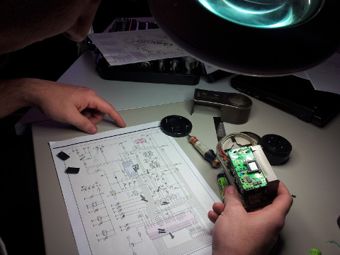
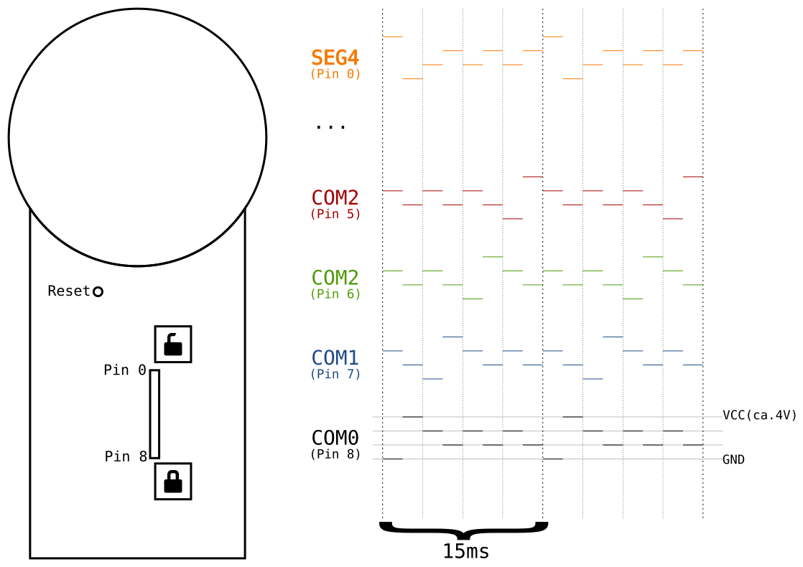
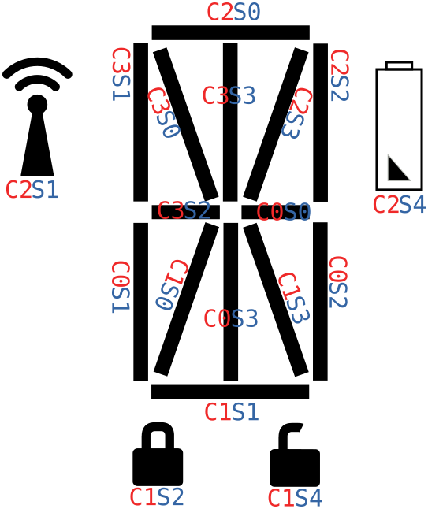
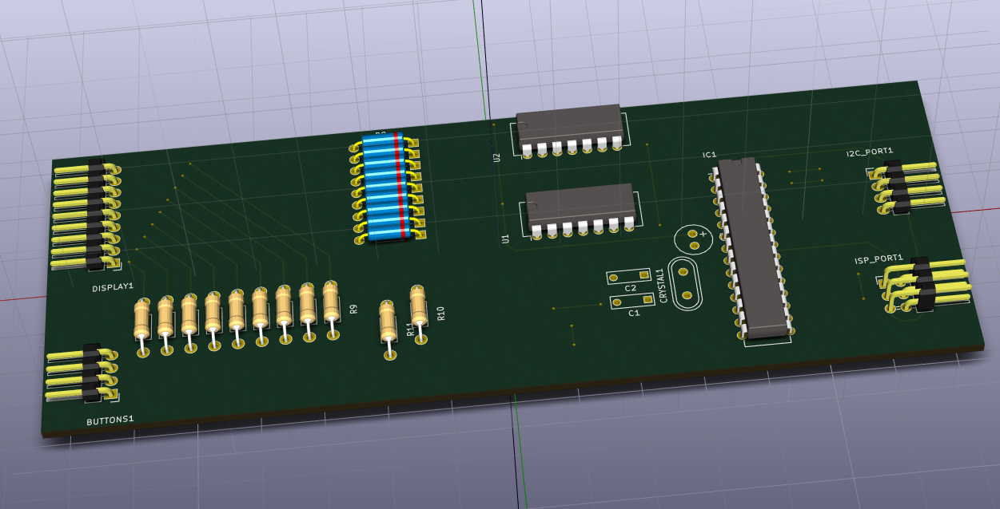
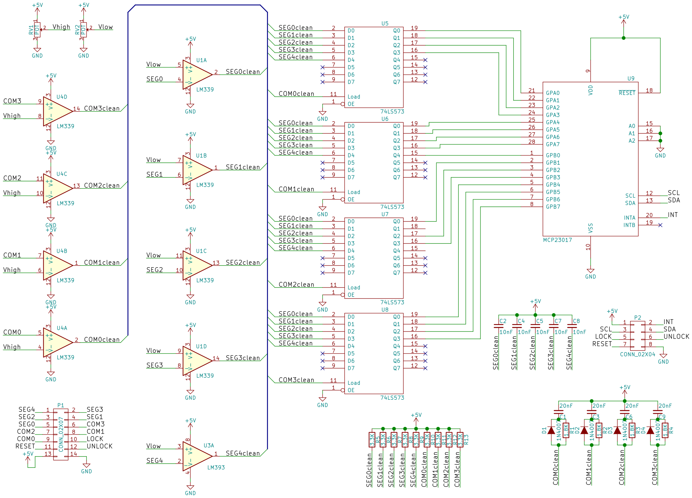
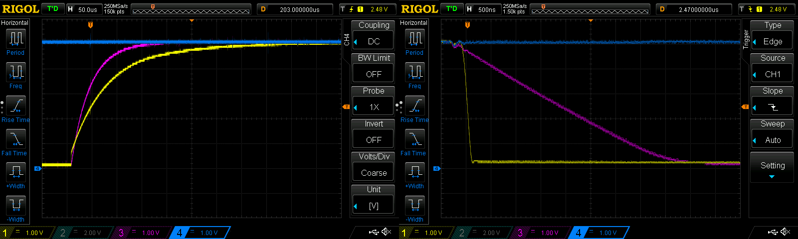
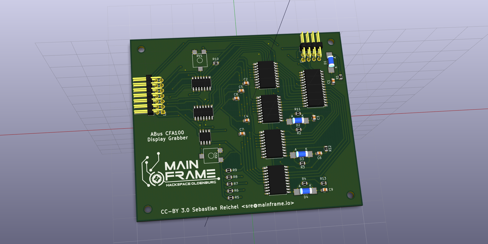
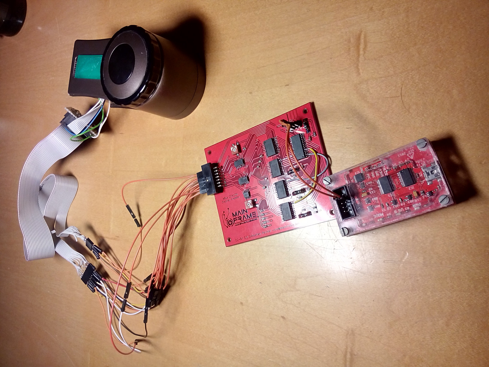

CFA1000 Display Grabber Repository

For our access control system, we needed a motor lock for our main door. After having a look how other hackspaces solved the problem, we decided to get ourself an ABUS CFA1000. It’s quite popular among Hackspaces, Fablabs and Makerspaces for two reasons:
- It’s cheap (< 100€) compared to other solutions, which often cost over 500€
- It does not require door modifications (our main door probably contains asbestos)
- The schematics are available from the Internet
Once we received the piece of hardware, we opened it up and had a look at the hardware. Usually the ABUS CFA1000 is used together with a simple radio remote control. The manual advertises, that a “secure” rolling-key system is used to encrypt the information exchange. We don’t trust that part and do not need wireless support, so we disabled that part of the ABUS. The radio support is conveniently placed onto its own PCB inside of the CFA1000, so we could just cut the interconnections (Vcc, GND, Signal) between the main PCB and the radio interface PCB. We also removed the radio PCB to gain some space inside of the case.
That left us with a block of hardware, that can (un)lock the door by pressing its buttons. Obviously that’s not pretty useful on its own. Using a digital storage oscilloscope (DSO), we measured, that the buttons connect ground to a pin. Next we desoldered the buttons and soldered a couple of wires instead. These wires are connected to GPIO pins of our access control system sharing a common ground, so that it can “press” the buttons by shortly settings the relevant GPIO pins to low.
So far so good. Other spaces use more or less the same setup and its pretty easy to implement the above changes. But the ABUS CFA1000 also has a small display, which displays its current state (locked/unlocked). That state also changes if the door is opened manually, so we were interested in it. After unsuccessfully trying to find that information via some boolean style pin on the PCB, we decided trying to reverse engineer the protocol used for the display.
The display is laying on top of the main PCB using some kind of foam connector. So it’s easy to probe the outputs from the CFA1000’s µC by removing the display and just connecting a DSO to the PCB pads. On the other hand its hard to do anything with the display without creating some PCB just for that task, since we cannot solder anything to it.
The first thing we noticed after having a look on our scope was, that the display is driven using 4 different voltage levels: 0V, 1V, 2V, 3V, 4V (voltage differs based on the voltage supplied to the CFA1000). Also from the schematics we got the information, that 4 pins are labeled SEG and 5 pins are labeled COM.

Measuring 4 pins at a time due to our scope not providing more input channels, we had a look at all 9 pins and noticed a few things:
- Pin 5-8 show a regular pattern independent of the display content
- The behaviour of the other pins changes with different display content
- Pin 5-8 have exactly the same pattern, but shifted
- 0V is always followed by 4V on pin 5-8 and 4V is always followed by 0V on pin 0-4
- Similarly 2V and 3V follow each other
We assume, that Pin 5-8 are our COM signals and are some kind of layer selection. It seems there are 4 time slots with each of them having two sub-slots. With that assumption we noticed, that each time slot either contains a 0V/4V pair or a 2V/3V pair. So we assume, that 0V/4V pair means the time slot is a logic “1” and 2V/3V pair is a logic “0”.
We also noticed, that the sub-slots of the SEG pins are inverted compared to the COM pins. So if e.g. SEG4 is on 4V, then the COM pin is either in its middle state, or at 0V. With the second sub-slot being inverted compared to the first one it means the pins are driven in both voltage directions. We assume, that its probably some hack to get the polarity right.
Anyways we still need to know, which pin is used for which segment on the display. Unfortunately we cannot easily connect the display to another PCB and on the ABUS pcb there is no easy method to inject a custom signal to the display. So instead we reconnected the display and let the CFA1000 generate something on the display for us. Then we put a piece of paper between the CFA1000’s PCB and on of the display’s pins and had a look, which segment was no longer displayed due to this. From time to time we had to press some buttons to generate other symbols on the display, because the segments must be enabled in the first place of course. Doing that we could identify basically all pins and created the following pin information graphic (C=COM, S=SEG):

With that we can decode the information from the display. We verified this by removing the display again, connecting our scope and trying to decode the display manually. After identifying a few incorrect pins (probably the piece of paper did accidently cover the wrong pin) and we were happy with the results, we started to think about a PCB doing the decoding for us.
First of all we somehow needed to get the 4-voltage-level signal into a 2-voltage-level binary signal. We initially tried to do that using zener-diodes to cap the voltage combined with some schmitt-triggers. The schmitt-triggeres feed the information into a ATmega then, which decodes the display pins and provides the information via I²C. Unfortunately, that turned out not to work that well. The voltage dropped, because the CFA1000’s µC did not provide enough energy for this setup. The image below shows our first attempt.

After finding a few more issues, we decided to start from scratch using a completly different design based on voltage comparators. We added a 4 comparators checking if the COM pins are above a certain voltage level near the 4V mark and another 5, that check if the SEG pins are below a reference voltage near the 1V mark. After the comparator we have a digital signal, where a segment is enabled if the SEG pin and the COM pin are high.
In theory we could just connect this to an ATmega again and decode the signal now. This time we try to solve the problem in hardware though and add 4 latches
- one for each layer/COM pin. The latches will take over values from their input pins, if their “Load” pin is high. So we can simply connect the first COM pin to the first latch’s Load pin, the second COM pin to the second latch’s Load pin and so on. Then the latches will take over values when the layer is activated. The SEG pins on the other hand can simply be connected to each latch. The output pins will then provide the state of all segments (there are 4*5 = 20 possible combinations, but some of them are not used).
We connected the relevant pins to a simple I²C port-expander (MCP23017), so that we can read the display state from our access control system. The expander also provides an interrupt pin to notify the host system, that one of the input pins changed.

So far so good from the digital side. Unfortunately it again did not work as expected. So let’s get out our scope again and check the lines: The voltage comparators work greatly this time and we have nice boolean values behind it.
The screenshot below shows one of the raw COM signals (yellow) together with the cleaned variant (cyan). Also visible is one of the raw SEG signals (purple) together with its cleaned variant (blue). So why is it not working?

Looking further we noticed, that the COM signal is enabled slightly longer, than the SEG signal. Thus our latch will take over incorrect values. We actually want the COM signal to be enabled slightly later than the SEG signal and be disabled slightly before, so that the SEG signal is always valid when the latch takes over values.
On the other hand we do not need good signal edges, so we solved the problem using capacitors. To ensure, that SEG is initialized before the COM signal we started with a capacitor on the COM line. To avoid increasing the problem for the falling edge side, we added a diode, so that the capacitor is discharged fastly here. Now we also added a capacitor to the SEG signals, so that it keeps its value a bit longer. This capacitor must be smaller than the one for the COM signal to avoid breaking the start behaviour.
Below you can see screenshots of the resulting signals. The yellow one is a COM signal and the purple one is a SEG signal. The blue one shows the matching output of the latch. As you can see it keeps it value at high.

With that fixed we ordered a nice PCB in china and soldered it and found it mostly working. Unfortunately we still had two pins wrong, so we had to patch the PCB to get the right signal lines from the latches to the port expander. If we ever need another PCB, we add another port expander and add the additional signal lines and the buttons there instead of directly providing them to the host system.

